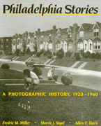

Photographic Philadelphia memories, volume 2
Photographic Philadelphia memories, volume 2


 Photographic Philadelphia memories, volume 2
Photographic Philadelphia memories, volume 2

|  |
Philadelphia StoriesA Photographic History, 1920-1960Fredric M. Miller, Morris J. Vogel and Allen F. Daviscloth EAN: 978-0-87722-551-5 (ISBN: 0-87722-551-6) |
"Some 350 photos inform, fascinate and touch the heart."
—The Philadelphia Daily News
Philadelphia Stories is a kind of family album. As in their earlier volume, Still Philadelphia: A Photographic History, 1890-1940, Miller, Vogel, and Davis have collected photographs of ordinary lives and daily events from 1920 to 1960 that have shaped the collective memory of people in the Philadelphia area. Through a series of photo essays, Philadelphia Stories evokes the mood of an era that embraced the Great Depression, World War II, the Cold War, and the complacent prosperity of the 1950s. Contemporary photos document physical changes in the metropolitan area: the developing skyline, the streets of rowhouses, the expanding suburbs. Details on homelife, food prices, school activities, local politics, shopping, social mores, and neighborhood customs chronicle experiences that are in many ways distinct to Philadelphians but also indicative of dramatic social, political, and economic shifts in the United States over forty years.
Using photojournalism as the dominant style of documentary photography—and consciousness making—the book also features three prototypical family albums. These collections of snapshots taken by local residents to record weddings, holidays, and other family events not only depict how people saw themselves at various times but reveal the kinds of memories they wanted to keep. While major national events create the context for this social history, the book focuses on the daily lives of Philadelphians: as they cope with the Depression, participate in New Deal programs, buy automobiles and television sets, grow Victory Gardens, hold air raid drills, visit the Freedom Train, move to the suburbs, cling to old neighborhoods, and maintain tradition amid flux.
Philadelphia Stories celebrates the recent past in the words and images of those who experienced it. It is a family album for all who know and love the city.
"This volume attempts to translate social history, the story of ordinary citizens, into a visual and readable form, and to show the impact of outside events on the city's history.... [I]t is simply the best book of its kind that we've seen."
—History of Photography
"I loved both the pictures and the stories.... They make a fine record of the period and reminded me of my whole life in Philadelphia."
—E. Digby Baltzell
"Miller, Vogel, and Davis have succeeded once more in making a thoughtful illustrated history of the city."
—Sam Bass Warner
Preface
Acknowledgments
1. Introduction: A City in Transition
2. The Knife of the Depression
3. Family Album, 1920s and 1930s
4. The New Deal City
5. Homefront
6. Family Album, World War II
7. A Last Hurrah
8. The Enduring Rowhouse City
9. Family Album, 1945-1960
10. Metropolis Reshaped
11. The Spirit of the 1950s
Sources
Index
Fredric M. Miller is Curator of the Urban Archives Center, Paley Library, Temple University.
Morris J. Vogel is Professor of History, Temple University.
Allen F. Davis is Professor of History, Temple University.
The authors have also collaborated on Still Philadelphia: A Photographic History, 1890-1940 (Temple).
Philadelphia Region
American Studies
Art and Photography
© 2015 Temple University. All Rights Reserved. This page: http://www.temple.edu/tempress/titles/570_reg.html.